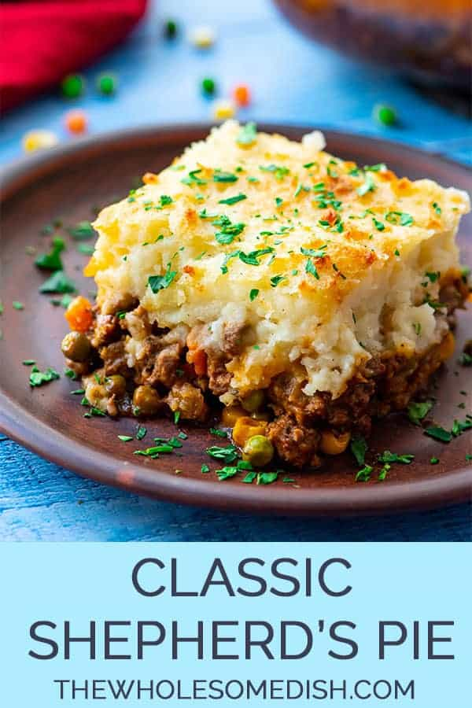

Cucumber Salad
Odin Recipes

This is an image of shepherd's pie
This could be what you make! With some hard work, following this list, and determination, you'll be there!
I'm designing the website like I'm asking you to make the recipe -- with determination and grit!
Ingredients
- Hamburger
- Potatoes (mashed)
- Corn
- Peas
- Carrots
Steps
- Gather ingredients
- Slice ingredients
- Bake ingredients
- Apply cheese atop (if desired)